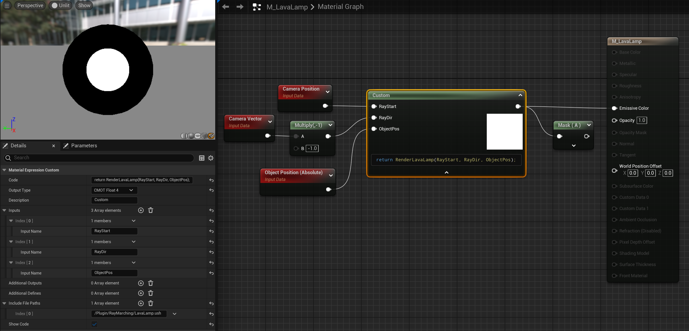
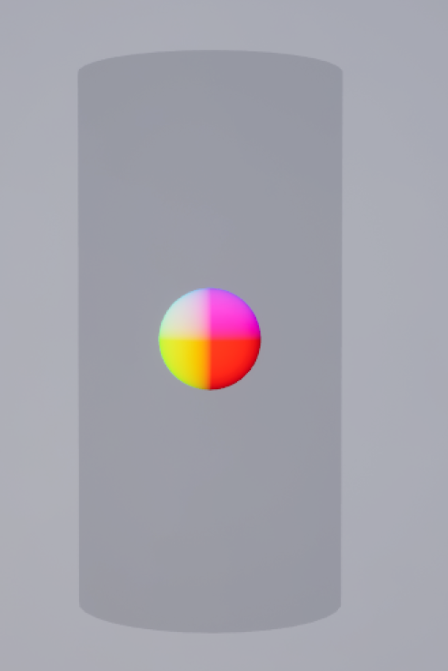
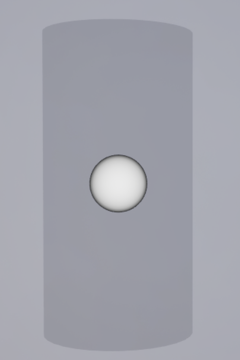
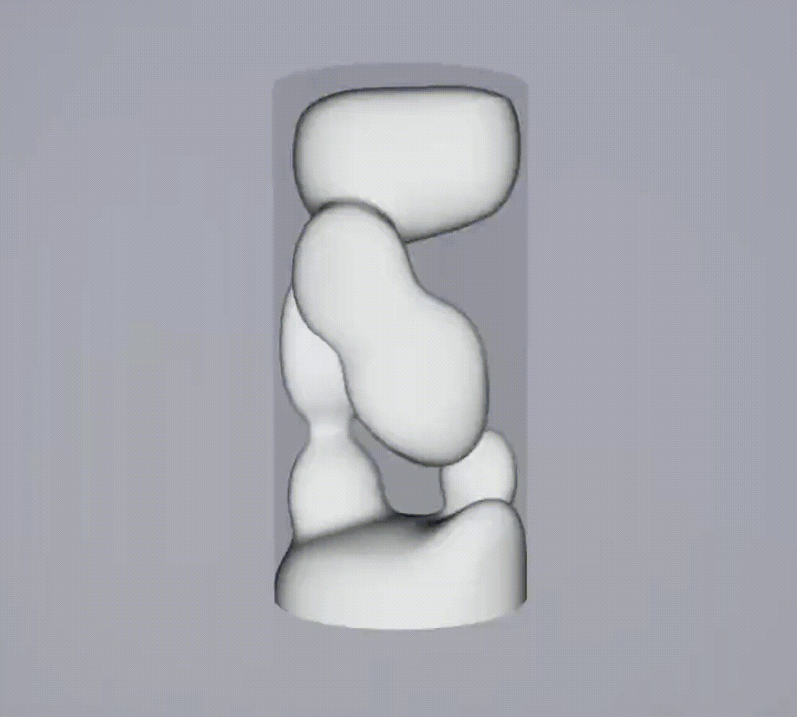
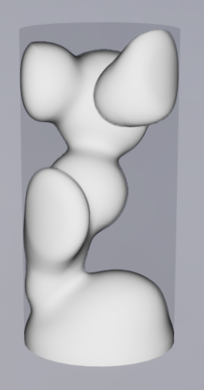
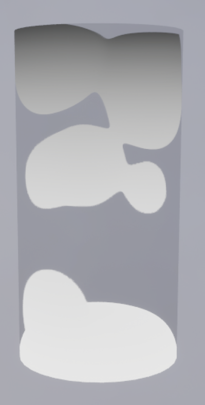
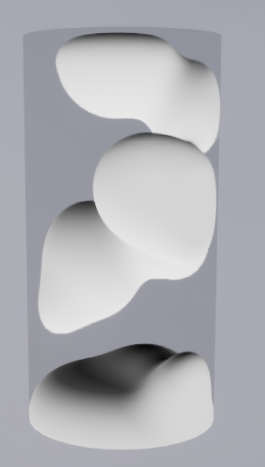
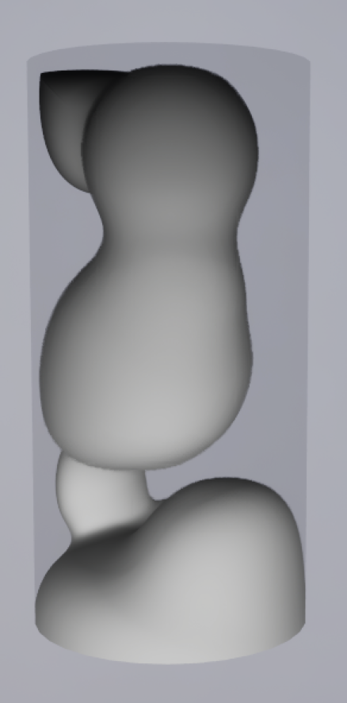
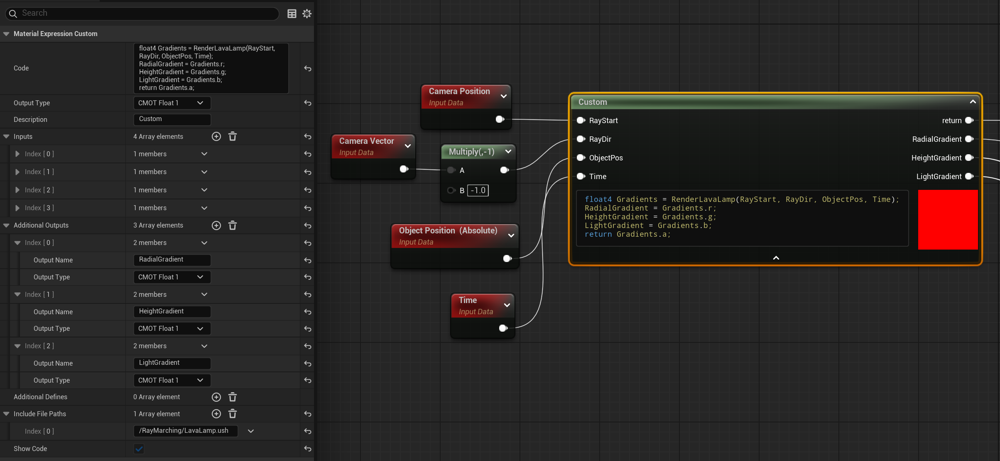
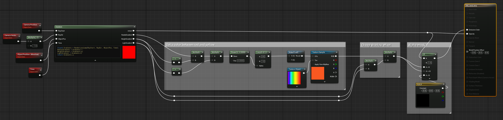

Author: Nelson Defoulny
Category: Tutorials
Unreal Engine Version: 5.5.4
UE Ray Marching Lava Lamp
Start Up
I assume you have prior knowledge about Ray Marching and Unreal Engine Shader Files. If it is not the case you can look at my previous posts on these topics :
- Introduction of Ray Marching in Unreal Engine
- Moving Material Custom Node HLSL to Shader Files.
Creating Ray Marching Library Header
Add Unreal Shader Header File RayMarchingLibrary.ush to the project. I will use this file for reusable functions and structures like SDFs, math tools, or rendering utilities.
Let's start with sphere SDF. Here I chose to encapsulate the SDF into a struct for future reuse but it is not required. We should also include Platform.ush as it is mandatory. I also include Common.ush as it will be helpful later on.
#pragma once
#include "/Engine/Public/Platform.ush"
#include "/Engine/Private/Common.ush"
struct SDF
{
static float Sphere(float3 pos, float radius)
{
return length(pos) - radius;
}
};
Creating Lava Lamp Header
Add Unreal Shader Format File LavaLamp.ush to the project. I will use it for the main rendering loop of the lava lamp. I have decided to split up the lava lamp in a separate file so the library stays clean and reusable.
Depending on your need, each parameter can be declared from the code or exposed it as a parameter in your material. Some parameters like the camera position, camera vector or time are simple to get from the material but might be more difficult to get from HLSL. These values usually comes from Common.ush or the MaterialParameters structure. I personally chose to expose all values that are not trivial to retrieve from HLSL for simplicity.
#pragma once
#include "./RayMarchingLibrary.ush"
#define DIST_THRESHOLD 0.1f
#define ITER_MAX 128
float GetScene(float3 Pos, float Time)
{
return FSDF::Sphere(Pos, 25.0f);
}
float4 RenderLavaLamp(float3 RayStart, float3 RayDir, float3 ObjectPos, float Time)
{
float TotalDistance = 0;
for(int i = 0; i < ITER_MAX; i++)
{
// Ray Sampling
float3 RayPos = RayStart + RayDir * TotalDistance;
// Ray relative to lava lamp
float3 Pos = RayPos - ObjectPos;
// SDF
float Dist = GetScene(Pos, Time);
// Surface is close enough
if(Dist < DIST_THRESHOLD)
{
return float4(1.0f, 1.0f, 1.0f, 1.0f);
}
// Adaptive distance for next step
TotalDistance += Dist;
}
return float4(0.0f, 0.0f, 0.0f, 0.0f);
}
Here we don't need to include Platform.ush because it is indirectly included through the library.
Creating Lava Lamp Material
Create an unlit translucent material M_LavaLamp and set the preview window to unlit for consistency. Add a Custom Node that includes LavaLamp.ush using your virtual path and returns RenderLavaLamp().

As we took Object World Position into account you should have the same result anywhere in a map.
Prerequisites
First Rendering
In order to work on geometry we need a simple renderer that provides some sens of depth. The first step of any rendering is to get scene normals using difference approximation.
// Central Difference Approximation : (P+ - P-) / 2
float3 GetNormal(float3 Pos)
{
return normalize(0.5 * float3(
GetScene(Pos + float3(0.1f, 0.0f, 0.0f)) - GetScene(Pos - float3(0.1f, 0.0f, 0.0f)),
GetScene(Pos + float3(0.0f, 0.1f, 0.0f)) - GetScene(Pos - float3(0.0f, 0.1f, 0.0f)),
GetScene(Pos + float3(0.0f, 0.0f, 0.1f)) - GetScene(Pos - float3(0.0f, 0.0f, 0.1f))
));
}
// Forward Difference Approximation : (P+ - P)
float3 GetCheapNormal(float3 Pos, float SceneDist)
{
return normalize(float3(
GetScene(Pos + float3(0.1f, 0.0f, 0.0f)) - SceneDist,
GetScene(Pos + float3(0.0f, 0.1f, 0.0f)) - SceneDist,
GetScene(Pos + float3(0.0f, 0.0f, 0.1f)) - SceneDist
));
}
The delta (here '0.1') needs to match your object geometry. Small object and high curvature requires small numbers.
Most of the time forward difference approximation has enough precision and should be preferred for performance reasons.
Using the normal as color is really effective to work on geometry but we can also make a simple fresnel effect from it.
if(Dist < DIST_THRESHOLD)
{
// Use normal directly
return float4(Normal, 1.0f);
// Fresnel effect
float Fresnel = pow(dot(RayDir, Normal), 2);
return float4(Fresnel, Fresnel, Fresnel, 1.0f);
}
Fresnel effect uses the dot product which is 0 when vectors are perpendicular and 1/-1 when they are aligned. The sign doesn't matter due to the power of 2.

Normal

Fresnel effect
In order to see the container (here a cylinder) i just used a small alpha value as default.
Generating Random Numbers
In order to work on our geometry we need deterministic random number generator. In HLSL there is no built-in random function so the common technic is to use hash functions.
These function typically take one or multiple numbers as an input and output a pseudo random number from it. This mean that if we feed the same input we get the same output. One typical input is to use UV coordinate so random numbers are deterministic pixel wise. In our case we are going to generate hash input manually.
// using float input
float Rand(float x)
{
return frac(sin(x) * 43758.5453123);
}
// using integer input
float Rand(int x)
{
uint n = asuint(x);
n = (n << 13) ^ n;
return frac((n * (n * n * 15731u + 789221u) + 1376312589u) * (1.0 / 4294967296.0));
}
// Signed Rand from float
float SRand(float X)
{
return Rand(X) * 2.0f - 1.0f;
}
// Signed Rand from int
float SRand(int X)
{
return Rand(X) * 2.0f - 1.0f;
}
Geometry
For this example I have chosen to use cylindrical shape with a blob at the bottom.
First step is to add SDF we need in the library.
struct FSDF
{
static float Sphere(float3 pos, float radius)
{
return length(pos) - radius;
}
static float Cylinder(float3 p, float h, float r)
{
float2 d = abs(float2(length(p.xy), p.z)) - float2(r, h);
return min(max(d.x, d.y), 0.0) + length(max(d, 0.0));
}
static float OpUnion(float d1, float d2)
{
return min(d1, d2);
}
static float OpSmoothUnion(float d1, float d2, float k)
{
float h = max(k - abs(d1 - d2), 0.0f);
return min(d1, d2) - h * h * 0.25 / k;
}
static float OpSmoothIntersection(float d1, float d2, float k)
{
float h = clamp(0.5 - 0.5 * (d2 - d1) / k, 0.0, 1.0);
return lerp(d2, d1, h) + k * h * (1.0 - h);
}
};
Then we need to get time in order to make our geometry moves. Simplest method is to add it to RenderLavaLamp function and bind it to Time in the material. We also need to add time as parameter to all function that needs it (GetScene, GetNormal...).
Now we can create our geometry in the GetScene function. Here is my version as an example.
#define GLASS_HALF_HEIGHT 20
#define GLASS_RADIUS 10
#define BUBBLE_SPEED 0.25f
float GetScene(float3 Pos, float Time)
{
// Deterministic Random Index
int RandId = 0;
// Cylinder Glass Container
float SdGlass = FSDF::Cylinder(Pos, GLASS_HALF_HEIGHT, GLASS_RADIUS);
// Blob at the bottom of the container
float SdBottomBubble = FSDF::Sphere(Pos - float3(0, 0, -(GLASS_HALF_HEIGHT + GLASS_RADIUS * 1.4)), GLASS_RADIUS * 2);
// All bubbles
float SdBubbles = SdBottomBubble;
for(int i = 0; i < 10; i++)
{
float3 BubbleLocation = float3(
sin(BUBBLE_SPEED * SRand(RandId++) * Time + PI * SRand(RandId++)) * GLASS_RADIUS * 0.80f,
sin(BUBBLE_SPEED * SRand(RandId++) * Time + PI * SRand(RandId++)) * GLASS_RADIUS * 0.80f,
sin(BUBBLE_SPEED * SRand(RandId++) * Time + PI * SRand(RandId++)) * GLASS_HALF_HEIGHT * 0.90f
);
float BubbleRadius = lerp(3.0f, 7.5f, abs(Rand(RandId++)));
float SdBubble = FSDF::Sphere(Pos - BubbleLocation, BubbleRadius);
SdBubbles = FSDF::OpSmoothUnion(SdBubbles, SdBubble, 3);
}
// Constrain bubbles in the glass container
return FSDF::OpSmoothIntersection(SdBubbles, SdGlass, 3);
}

Rendering
Gradients
They are many option for rendering but for this example I have chosen a simple approach.
The idea is to simulate a light coming from the bottom of the lava lamp.
Radial Gradient
I kept the fresnel effect that gives a nice surface feeling.

Height Gradient
// return a gradient from 0 at the top of the cylinder to 1 at the bottom
float HeightRatio = 1 - 0.5f * (Pos.z + GLASS_HALF_HEIGHT) / GLASS_HALF_HEIGHT;

Light Gradient
// Light source is at the bottom so we check if the normal is pointing down.
// Remap dot product range [-1, 1] to [0, 1]
float LightGradient = 0.5f * (1 + dot(Normal, float3(0, 0, -1)));

Output
There are several ways to combine the gradients but for this example I kept it simple.
I used the following method to remap the gradient into acceptable range, in my case [0.15f, 1.0f].
Then combined all gradients with the base color.
float3 BaseColor = float3(1, 1, 1);
float3 OutColor = BaseColor * HeightGradient * RadialGradient * LightGradient

Adding Colors
To keep it simple I choose to add colors in the material but doing it in HLSL is viable too. Both options have pros and cons depending on your needs.
I modify the custom node output to get the gradients in the material.

I used gradient to compute X coordinate into a heatmap texture. This gives a nice color gradient from red to yellow.
I also used height and light gradient to darken "shadow" region.
